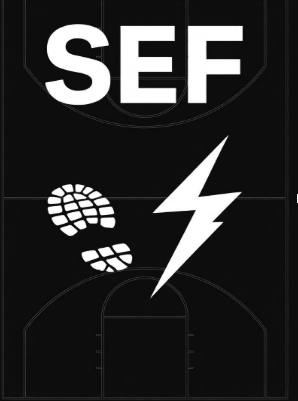

Nuestra idea es realizar pavimentos deportivos que utilicen la energía cinética de las huellas de los jugadores o de la gente que pase por encima. Estos pavimentos incorporan una capa de sensores que captan esa energía y la transforman en electricidad mediante un sistema de generadores. Esta energía puede utilizarse para alimentar luces, pantallas u otros sistemas.
Nuestro proyecto ofrece soluciones a los problemas económicos como el precio de la luz y la calidad del terreno deportivo. Con nuestro sistema, los clubs pueden ahorrar mucho dinero en electricidad y mejorar sus instalaciones deportivas con pavimentos de excelente calidad.
Este proyecto nace porque somos amantes del deporte y queremos ayudar a los clubs de nuestro entorno. Además, queremos contribuir al medio ambiente reduciendo el uso de energías contaminantes y fomentando el uso de energías renovables.